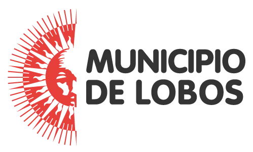

DOBLE IMPACTO (inscripción)
Torneo de pádel adaptado
Sitio Oficial
lobos.gob.ar
Instagram
@municipiolobos
Facebook
@municipiolobos
YouTube
@MunicipiodeLobos
Canal de WhatsApp
Enterate de todas las novedades